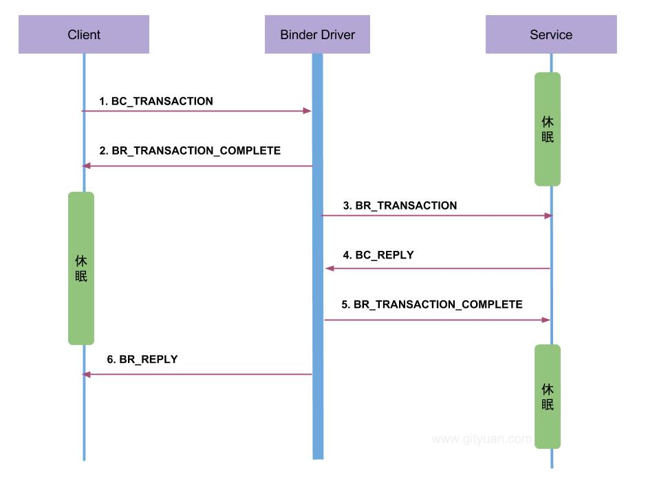
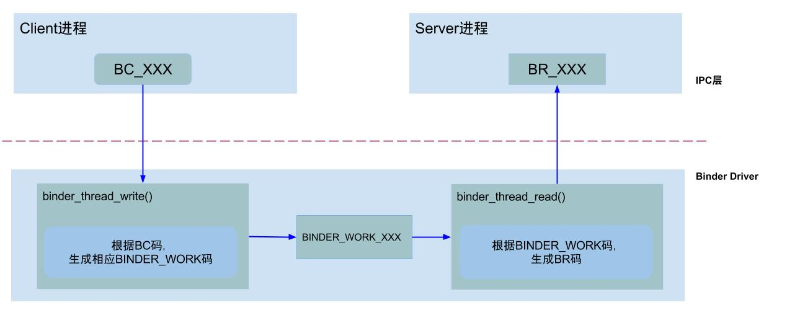
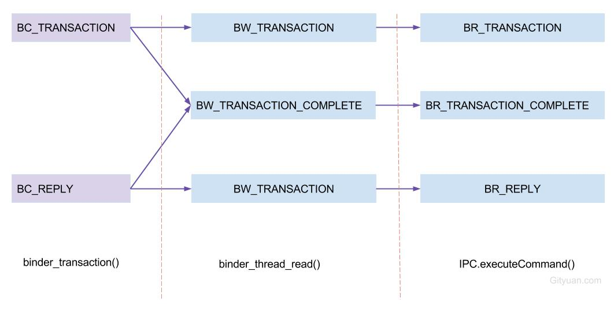
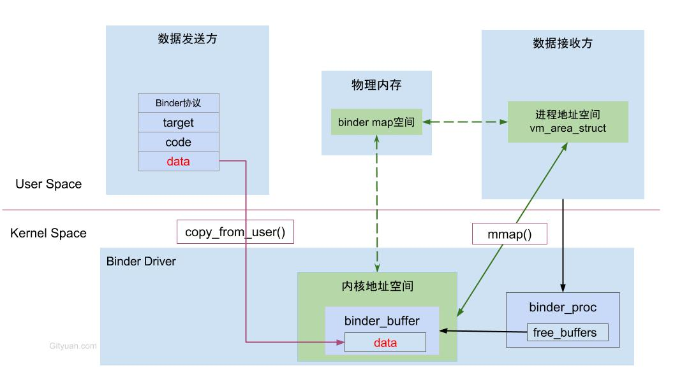

概述 Binder驱动的源码在Android的内核模块，Aosp源码中不包含这部分代码，可以在这里下载内核相关的源码：Kernel 。Binder驱动相关的源码不大看得懂，对Linux内核了解不多，因此这篇文章借鉴了网上相关的一些解析。
Binder驱动是Android专用的，但底层的驱动架构与Linux驱动一样。binder驱动以misc设备进行注册，作为虚拟字符设备，没有直接操作硬件，只有对设备内存的处理。主要是驱动设备的初始化(binder_init)，打开 (binder_open)，映射(binder_mmap)，数据操作(binder_ioctl)。
用户态的程序调用Kernel层驱动需要陷入内核态，进行系统调用(syscall)。比如说当用户空间调用open()方法时，通过它传入的参数：/dev/binder，然后经过系统调用，便调用binder驱动的binder_open()方法。
用户/内核态数据拷贝 get_user，put_user，copy_from_user和copy_to_user函数都是Linux提供的用于传递内核与用户空间数据的函数。
put_user与copy_to_user都是从内核空间到用户空间拷贝数据
get_user与copy_from_user都是从用户空间到内核空间拷贝数据
put_user与get_user只能拷贝简单类型的数据，比如char型、int型等
copy_from_user与copy_to_user可以拷贝多个数据
函数参数如下：
1 2 3 4 5 6 7 8 9 10 11 12 13 14 15 16 17 put_user(x, ptr); get_user(x, ptr); unsigned long copy_to_user (void __user * to, const void * from, unsigned long n) unsigned long copy_from_user (void * to, const void __user * from, unsigned long n)
binder_init binder_init函数的主要工作是为了注册misc设备，源码位于：/kernel/drivers/android/binder.c。
1 2 3 4 5 6 7 8 9 10 11 12 13 14 15 16 17 18 19 20 21 22 23 24 25 26 27 28 29 30 31 32 33 34 35 36 37 38 39 40 41 42 43 44 45 46 47 48 49 50 51 52 53 54 55 56 57 58 59 60 61 62 63 64 65 66 67 68 69 static int __init binder_init (void ) int ret; char *device_name, *device_tmp; struct binder_device *device ; struct hlist_node *tmp ; char *device_names = NULL ; if (!IS_ENABLED(CONFIG_ANDROID_BINDERFS) && strcmp (binder_devices_param, "" ) != 0 ) { device_names = kstrdup(binder_devices_param, GFP_KERNEL); if (!device_names) { ret = -ENOMEM; goto err_alloc_device_names_failed; } device_tmp = device_names; while ((device_name = strsep(&device_tmp, "," ))) { ret = init_binder_device(device_name); if (ret) goto err_init_binder_device_failed; } } ret = init_binderfs(); if (ret) goto err_init_binder_device_failed; return ret; } static int __init init_binder_device (const char *name) int ret; struct binder_device *binder_device ; binder_device = kzalloc(sizeof (*binder_device), GFP_KERNEL); if (!binder_device) return -ENOMEM; binder_device->miscdev.fops = &binder_fops; binder_device->miscdev.minor = MISC_DYNAMIC_MINOR; binder_device->miscdev.name = name; refcount_set(&binder_device->ref, 1 ); binder_device->context.binder_context_mgr_uid = INVALID_UID; binder_device->context.name = name; mutex_init(&binder_device->context.context_mgr_node_lock); ret = misc_register(&binder_device->miscdev); if (ret < 0 ) { kfree(binder_device); return ret; } hlist_add_head(&binder_device->hlist, &binder_devices); return ret; } struct binder_device { struct hlist_node hlist ; struct miscdevice miscdev ; struct binder_context context ; struct inode *binderfs_inode ; refcount_t ref; };
binder_open binder_open函数创建了binder_proc对象，并把当前进程等信息保存到binder_proc对象，然后将其加入到全局链表binder_procs。
1 2 3 4 5 6 7 8 9 10 11 12 13 14 15 16 17 18 19 20 21 22 23 24 static int binder_open (struct inode *nodp, struct file *filp) struct binder_proc *proc ; struct binder_device *binder_dev ; struct binderfs_info *info ; struct dentry *binder_binderfs_dir_entry_proc = NULL ; proc = kzalloc(sizeof (*proc), GFP_KERNEL); if (proc == NULL ) return -ENOMEM; get_task_struct(current->group_leader); proc->tsk = current->group_leader; filp->private_data = proc; mutex_lock(&binder_procs_lock); hlist_add_head(&proc->proc_node, &binder_procs); mutex_unlock(&binder_procs_lock); return 0 ; }
binder_mmap binder_mmap函数的主要功能：首先在内核虚拟地址空间申请一块与用户虚拟内存相同大小的内存；然后再申请1个page大小的物理内存，再将同一块物理内存分别映射到内核虚拟地址空间和用户虚拟内存空间，从而实现了用户空间的Buffer和内核空间的Buffer同步操作的功能。
1 2 3 4 5 6 7 8 9 10 11 12 13 14 15 16 17 18 19 20 21 22 23 24 25 26 27 28 29 30 31 static int binder_mmap (struct file *filp, struct vm_area_struct *vma) int ret; struct binder_proc *proc = filp ->private_data ; const char *failure_string; if (proc->tsk != current->group_leader) return -EINVAL; if ((vma->vm_end - vma->vm_start) > SZ_4M) vma->vm_end = vma->vm_start + SZ_4M; if (vma->vm_flags & FORBIDDEN_MMAP_FLAGS) { ret = -EPERM; failure_string = "bad vm_flags" ; goto err_bad_arg; } vma->vm_private_data = proc; ret = binder_alloc_mmap_handler(&proc->alloc, vma); if (ret) return ret; mutex_lock(&proc->files_lock); proc->files = get_files_struct(current); mutex_unlock(&proc->files_lock); return 0 ; err_bad_arg: pr_err("%s: %d %lx-%lx %s failed %d\n" , __func__, proc->pid, vma->vm_start, vma->vm_end, failure_string, ret); return ret; }
binder_ioctl binder_ioctl binder_ioctl函数负责在两个进程间收发IPC数据和IPC reply数据。该函数的参数为一个文件指针filp，以及一个命令和参数，用来表示不同的操作。
1 2 3 4 5 6 7 8 9 10 11 12 13 14 15 16 17 18 19 20 21 22 23 24 25 26 27 28 29 30 31 32 33 static long binder_ioctl (struct file *filp, unsigned int cmd, unsigned long arg) int ret; struct binder_proc *proc = filp ->private_data ; struct binder_thread *thread ; unsigned int size = _IOC_SIZE(cmd); void __user *ubuf = (void __user *)arg; ret = wait_event_interruptible(binder_user_error_wait, binder_stop_on_user_error < 2 ); if (ret) goto err_unlocked; thread = binder_get_thread(proc); if (thread == NULL ) { ret = -ENOMEM; goto err; } switch (cmd) { default : ret = -EINVAL; goto err; } ret = 0 ; err: if (thread) thread->looper_need_return = false ; wait_event_interruptible(binder_user_error_wait, binder_stop_on_user_error < 2 ); err_unlocked: trace_binder_ioctl_done(ret); return ret; }
下面列举几个常用的命令。
BINDER_WRITE_READ BINDER_WRITE_READ命令用来进行Binder读写交互，流程如下：
首先，把用户空间数据ubuf拷贝到内核空间bwr；
当bwr写缓存有数据，则执行binder_thread_write；当写失败则将bwr数据写回用户空间并退出；
当bwr读缓存有数据，则执行binder_thread_read；当读失败则再将bwr数据写回用户空间并退出；
最后，把内核数据bwr拷贝到用户空间ubuf。
源码如下：
1 2 3 4 5 6 7 8 9 10 11 12 13 14 15 16 17 18 19 20 21 22 23 24 25 26 27 28 29 30 31 32 33 34 35 36 37 38 39 40 41 42 43 44 45 46 47 48 49 50 51 52 53 54 55 56 57 58 59 60 61 62 63 case BINDER_WRITE_READ: ret = binder_ioctl_write_read(filp, cmd, arg, thread); if (ret) goto err; break ; static int binder_ioctl_write_read (struct file *filp, unsigned int cmd, unsigned long arg, struct binder_thread *thread) int ret = 0 ; struct binder_proc *proc = filp ->private_data ; unsigned int size = _IOC_SIZE(cmd); void __user *ubuf = (void __user *)arg; struct binder_write_read bwr ; if (size != sizeof (struct binder_write_read)) { ret = -EINVAL; goto out; } if (copy_from_user(&bwr, ubuf, sizeof (bwr))) { ret = -EFAULT; goto out; } if (bwr.write_size > 0 ) { ret = binder_thread_write(proc, thread, bwr.write_buffer, bwr.write_size, &bwr.write_consumed); if (ret < 0 ) { bwr.read_consumed = 0 ; if (copy_to_user(ubuf, &bwr, sizeof (bwr))) ret = -EFAULT; goto out; } } if (bwr.read_size > 0 ) { ret = binder_thread_read(proc, thread, bwr.read_buffer, bwr.read_size, &bwr.read_consumed, filp->f_flags & O_NONBLOCK); trace_binder_read_done(ret); binder_inner_proc_lock(proc); if (!binder_worklist_empty_ilocked(&proc->todo)) binder_wakeup_proc_ilocked(proc); binder_inner_proc_unlock(proc); if (ret < 0 ) { if (copy_to_user(ubuf, &bwr, sizeof (bwr))) ret = -EFAULT; goto out; } } if (copy_to_user(ubuf, &bwr, sizeof (bwr))) { ret = -EFAULT; goto out; } out: return ret; }
binder_thread_write和binder_thread_read函数放到下面单独讲解。
BINDER_SET_CONTEXT_MGR BINDER_SET_CONTEXT_MGR命令是操作servicemanager进程成为上下文管理者，BINDER_SET_CONTEXT_MGR_EXT命令携带有额外参数。
1 2 3 4 5 6 7 8 9 10 11 12 13 14 15 16 17 18 19 20 21 22 23 24 25 26 27 28 29 30 31 32 33 34 35 36 37 38 39 40 41 42 43 44 45 46 47 48 49 50 51 52 53 54 55 56 57 58 59 60 61 62 63 64 65 66 67 68 69 70 71 72 73 74 75 76 77 78 79 case BINDER_SET_CONTEXT_MGR_EXT: { struct flat_binder_object fbo ; if (copy_from_user(&fbo, ubuf, sizeof (fbo))) { ret = -EINVAL; goto err; } ret = binder_ioctl_set_ctx_mgr(filp, &fbo); if (ret) goto err; break ; } case BINDER_SET_CONTEXT_MGR: ret = binder_ioctl_set_ctx_mgr(filp, NULL ); if (ret) goto err; break ; static int binder_ioctl_set_ctx_mgr (struct file *filp, struct flat_binder_object *fbo) int ret = 0 ; struct binder_proc *proc = filp ->private_data ; struct binder_context *context = proc ->context ; struct binder_node *new_node ; kuid_t curr_euid = current_euid(); mutex_lock(&context->context_mgr_node_lock); if (context->binder_context_mgr_node) { pr_err("BINDER_SET_CONTEXT_MGR already set\n" ); ret = -EBUSY; goto out; } ret = security_binder_set_context_mgr(proc->tsk); if (ret < 0 ) goto out; if (uid_valid(context->binder_context_mgr_uid)) { if (!uid_eq(context->binder_context_mgr_uid, curr_euid)) { ret = -EPERM; goto out; } } else { context->binder_context_mgr_uid = curr_euid; } new_node = binder_new_node(proc, fbo); if (!new_node) { ret = -ENOMEM; goto out; } binder_node_lock(new_node); new_node->local_weak_refs++; new_node->local_strong_refs++; new_node->has_strong_ref = 1 ; new_node->has_weak_ref = 1 ; context->binder_context_mgr_node = new_node; binder_node_unlock(new_node); binder_put_node(new_node); out: mutex_unlock(&context->context_mgr_node_lock); return ret; } static struct binder_node *binder_new_node (struct binder_proc *proc, struct flat_binder_object *fp) struct binder_node *node ; struct binder_node *new_node = kzalloc (sizeof (*node ), GFP_KERNEL ); if (!new_node) return NULL ; binder_inner_proc_lock(proc); node = binder_init_node_ilocked(proc, new_node, fp); binder_inner_proc_unlock(proc); if (node != new_node) kfree(new_node); return node; }
上面函数在Binder驱动层创建了binder_node结构体对象，并将当前binder_proc加入到binder_node的node->proc。
BINDER_SET_MAX_THREADS BINDER_SET_MAX_THREADS命令设置proc的最大线程数。
1 2 3 4 5 6 7 8 9 10 11 12 13 case BINDER_SET_MAX_THREADS: { int max_threads; if (copy_from_user(&max_threads, ubuf, sizeof (max_threads))) { ret = -EINVAL; goto err; } binder_inner_proc_lock(proc); proc->max_threads = max_threads; binder_inner_proc_unlock(proc); break ; }
BINDER_VERSION BINDER_VERSION命令用来获取binder的版本信息。
1 2 3 4 5 6 7 8 9 10 11 12 13 14 15 16 17 18 19 20 #ifdef BINDER_IPC_32BIT #define BINDER_CURRENT_PROTOCOL_VERSION 7 #else #define BINDER_CURRENT_PROTOCOL_VERSION 8 #endif case BINDER_VERSION: { struct binder_version __user *ver = ubuf ; if (size != sizeof (struct binder_version)) { ret = -EINVAL; goto err; } if (put_user(BINDER_CURRENT_PROTOCOL_VERSION, &ver->protocol_version)) { ret = -EINVAL; goto err; } break ; }
Binder通信协议 通信模型 列举一次完整的Binder通信过程(图片网上抄来)：

在4.x内核上看到源码里是BC_TRANSACTION_SG而不是BC_TRANSACTION。Binder协议包含在IPC数据中，分为两类:
BINDER_COMMAND_PROTOCOL：binder请求码，以BC_开头，简称BC码，用于从IPC层传递到Binder Driver层；
BINDER_RETURN_PROTOCOL：binder响应码，以BR_开头，简称BR码，用于从Binder Driver层传递到IPC层。
Binder IPC通信至少是两个进程的交互：
Client进程执行Binder驱动的binder_thread_write方法，根据BC码，生成相应的BINDER_WORK码；
Server进程执行Binder驱动的binder_thread_read方法，根据BINDER_WORK码，生成BR码，发送到用户空间处理。
通信过程如下：

协议转换图如下：

binder_thread_write 请求处理过程是通过binder_thread_write()方法，该方法用于处理Binder协议中的请求码。当binder_buffer存在数据，binder线程的写操作循环执行。
1 2 3 4 5 6 7 8 9 10 11 12 13 14 15 16 17 18 19 20 21 22 23 24 25 26 27 28 29 30 31 32 33 34 35 36 37 38 39 40 41 42 43 44 45 46 47 48 49 50 51 52 53 54 55 56 57 static int binder_thread_write (struct binder_proc *proc, struct binder_thread *thread, binder_uintptr_t binder_buffer, size_t size, binder_size_t *consumed) uint32_t cmd; struct binder_context *context = proc ->context ; void __user *buffer = (void __user *)(uintptr_t )binder_buffer; void __user *ptr = buffer + *consumed; void __user *end = buffer + size; while (ptr < end && thread->return_error.cmd == BR_OK) { int ret; if (get_user(cmd, (uint32_t __user *)ptr)) return -EFAULT; ptr += sizeof (uint32_t ); switch (cmd) { case BC_INCREFS: case BC_ACQUIRE: case BC_RELEASE: case BC_DECREFS: case BC_INCREFS_DONE: case BC_ACQUIRE_DONE: case BC_ATTEMPT_ACQUIRE: case BC_ACQUIRE_RESULT: case BC_FREE_BUFFER: case BC_TRANSACTION_SG: case BC_REPLY_SG: { struct binder_transaction_data_sg tr ; if (copy_from_user(&tr, ptr, sizeof (tr))) return -EFAULT; ptr += sizeof (tr); binder_transaction(proc, thread, &tr.transaction_data, cmd == BC_REPLY_SG, tr.buffers_size); break ; } case BC_TRANSACTION: case BC_REPLY: { struct binder_transaction_data tr ; if (copy_from_user(&tr, ptr, sizeof (tr))) return -EFAULT; ptr += sizeof (tr); binder_transaction(proc, thread, &tr, cmd == BC_REPLY, 0 ); break ; } case BC_REGISTER_LOOPER: case BC_ENTER_LOOPER: thread->looper |= BINDER_LOOPER_STATE_ENTERED; break ; case BC_EXIT_LOOPER: thread->looper |= BINDER_LOOPER_STATE_EXITED; break ; case BC_REQUEST_DEATH_NOTIFICATION: case BC_CLEAR_DEATH_NOTIFICATION: case BC_DEAD_BINDER_DONE: } *consumed = ptr - buffer; } return 0 ; }
对于请求码为BC_TRANSACTION/BC_REPLY/BC_TRANSACTION_SG/BC_REPLY_SG时，会执行binder_transaction()方法，这是最为频繁的操作。
1 2 3 4 5 6 7 8 9 10 11 12 13 14 15 16 17 18 19 20 21 22 23 24 25 26 27 28 29 30 31 32 33 34 35 36 37 38 39 40 41 42 43 44 45 46 47 48 49 50 51 52 53 54 55 56 57 58 59 60 61 62 63 64 65 66 67 static void binder_transaction (struct binder_proc *proc, struct binder_thread *thread, struct binder_transaction_data *tr, int reply, binder_size_t extra_buffers_size) int ret; struct binder_transaction *t ; struct binder_work *w ; struct binder_work *tcomplete ; struct binder_proc *target_proc = NULL ; struct binder_thread *target_thread = NULL ; struct binder_node *target_node = NULL ; for (buffer_offset = off_start_offset; buffer_offset < off_end_offset; buffer_offset += sizeof (binder_size_t )) { struct binder_object_header *hdr ; size_t object_size; struct binder_object object ; binder_size_t object_offset; binder_alloc_copy_from_buffer(&target_proc->alloc, &object_offset, t->buffer, buffer_offset, sizeof (object_offset)); object_size = binder_get_object(target_proc, t->buffer, object_offset, &object); hdr = &object.hdr; off_min = object_offset + object_size; switch (hdr->type) { case BINDER_TYPE_BINDER: case BINDER_TYPE_WEAK_BINDER: case BINDER_TYPE_HANDLE: case BINDER_TYPE_WEAK_HANDLE: case BINDER_TYPE_FD: case BINDER_TYPE_FDA: case BINDER_TYPE_PTR: } } tcomplete->type = BINDER_WORK_TRANSACTION_COMPLETE; t->work.type = BINDER_WORK_TRANSACTION; binder_enqueue_thread_work(thread, tcomplete); binder_enqueue_thread_work_ilocked(target_thread, &t->work); } static void binder_enqueue_thread_work (struct binder_thread *thread, struct binder_work *work) binder_inner_proc_lock(thread->proc); binder_enqueue_thread_work_ilocked(thread, work); binder_inner_proc_unlock(thread->proc); } static void binder_enqueue_thread_work_ilocked (struct binder_thread *thread, struct binder_work *work) binder_enqueue_work_ilocked(work, &thread->todo); thread->process_todo = true ; } static void binder_enqueue_work_ilocked (struct binder_work *work, struct list_head *target_list) list_add_tail(&work->entry, target_list); }
binder_thread_read 响应处理过程是通过binder_thread_read()方法，该方法根据不同的binder_work->type以及不同状态，生成相应的响应码。
1 2 3 4 5 6 7 8 9 10 11 12 13 14 15 16 17 18 19 20 21 22 23 24 25 26 27 28 29 30 31 32 33 34 35 36 37 38 39 40 41 42 43 44 45 46 47 48 49 50 51 52 53 54 55 56 57 58 59 60 61 62 63 64 65 66 67 68 69 70 71 72 73 74 75 76 77 78 79 80 81 82 83 84 static int binder_thread_read (struct binder_proc *proc, struct binder_thread *thread, binder_uintptr_t binder_buffer, size_t size, binder_size_t *consumed, int non_block) void __user *buffer = (void __user *)(uintptr_t )binder_buffer; void __user *ptr = buffer + *consumed; void __user *end = buffer + size; int ret = 0 ; int wait_for_proc_work; if (*consumed == 0 ) { if (put_user(BR_NOOP, (uint32_t __user *)ptr)) return -EFAULT; ptr += sizeof (uint32_t ); } retry: while (1 ) { uint32_t cmd; struct binder_transaction_data_secctx tr ; struct binder_transaction_data *trd = &tr .transaction_data ; struct binder_work *w = NULL ; struct list_head *list = NULL ; struct binder_transaction *t = NULL ; struct binder_thread *t_from ; size_t trsize = sizeof (*trd); binder_inner_proc_lock(proc); if (!binder_worklist_empty_ilocked(&thread->todo)) list = &thread->todo; else if (!binder_worklist_empty_ilocked(&proc->todo) && wait_for_proc_work) list = &proc->todo; else { binder_inner_proc_unlock(proc); if (ptr - buffer == 4 && !thread->looper_need_return) goto retry; break ; } w = binder_dequeue_work_head_ilocked(list ); switch (w->type) { case BINDER_WORK_TRANSACTION: case BINDER_WORK_RETURN_ERROR: case BINDER_WORK_TRANSACTION_COMPLETE: cmd = BR_TRANSACTION_COMPLETE; ptr += sizeof (uint32_t ); break ; case BINDER_WORK_NODE: case BINDER_WORK_DEAD_BINDER: case BINDER_WORK_DEAD_BINDER_AND_CLEAR: case BINDER_WORK_CLEAR_DEATH_NOTIFICATION: } if (t->buffer->target_node) { cmd = BR_TRANSACTION; } else { cmd = BR_REPLY; } } done: *consumed = ptr - buffer; binder_inner_proc_lock(proc); if (proc->requested_threads == 0 && list_empty(&thread->proc->waiting_threads) && proc->requested_threads_started < proc->max_threads && (thread->looper & (BINDER_LOOPER_STATE_REGISTERED | BINDER_LOOPER_STATE_ENTERED)) ) { proc->requested_threads++; binder_inner_proc_unlock(proc); binder_debug(BINDER_DEBUG_THREADS, "%d:%d BR_SPAWN_LOOPER\n" , proc->pid, thread->pid); if (put_user(BR_SPAWN_LOOPER, (uint32_t __user *)buffer)) return -EFAULT; binder_stat_br(proc, thread, BR_SPAWN_LOOPER); } else binder_inner_proc_unlock(proc); return 0 ; }
处理响应码的过程是在用户态处理，即用户空间的IPCThreadState::waitForResponse()以及ServiceManager中的binder_parse方法中会处理Binder协议中的响应码。
Binder内存机制 Binder进程间通信效率高的最主要原因是Binder的内存机制：虚拟进程地址空间(用户空间)和虚拟内核地址空间(内核空间)都映射到同一块物理内存空间。当Client端与Server端发送数据时，Client（作为数据发送端）先从自己的进程空间把IPC通信数据copy_from_user拷贝到内核空间，而Server端（作为数据接收端）与内核共享数据，不再需要拷贝数据，而是通过内存地址空间的偏移量，即可获悉内存地址，整个过程只发生一次内存拷贝。
而一般IPC的做法，需要Client端进程空间拷贝到内核空间，再由内核空间拷贝到Server进程空间，会发生两次拷贝。
对于进程和内核虚拟地址映射到同一个物理内存的操作是发生在数据接收端，而数据发送端还是需要将用户态的数据复制到内核态。
见图解：操作系统-进程与线程 。
Binder中的一次拷贝指的是ipc数据只进行了一次拷贝，但是封装了数据的结构(binder_write_read)存在多次拷贝。bwr.write_buffer是要写入的数据的首地址(用户空间)。数据的大致结构：
1 2 3 4 5 6 7 8 9 10 11 12 binder_write_read { write_buffer = &(cmd + binder_transaction_data + ...) write_size = sizeof (cmd) + sizeof (binder_transaction_data) + ... write_consumed = 0 ; } binder_transaction_data { data_size = data.ipcDataSize(); data.ptr.buffer = data.ipcData(); }

数据结构
结构体
名称
解释
binder_proc
binder进程
每个进程调用open()打开binder驱动都会创建该结构体，用于管理IPC所需的各种信息
binder_thread
binder线程
对应于上层的binder线程
binder_node
binder实体
对应于BBinder对象，记录BBinder的进程、指针、引用计数等
binder_ref
binder引用
对应于BpBinder对象，记录BpBinder的引用计数、死亡通知、BBinder指针等
binder_ref_death
binder死亡引用
记录binder死亡的引用信息
binder_write_read
binder读写
记录buffer中读和写的数据信息
binder_transaction_data
binder事务数据
记录传输数据内容，比如发送方pid/uid，RPC数据
flat_binder_object
binder扁平对象
Binder对象在两个进程间传递的扁平结构
binder_buffer
binder内存
调用mmap()创建用于Binder传输数据的缓存区
binder_transaction
binder事务
记录传输事务的发送方和接收方线程、进程等
binder_work
binder工作
记录binder工作类型
总结
binder_init：初始化字符设备；
binder_open：打开Binder驱动设备，获取驱动的文件描述符，过程需要持有同步锁；
binder_mmap：在内核分配一块内存，该过程需要持有同步锁；
binder_ioctl：执行相应的ioctl操作，该过程需要持有同步锁；
参考：binder-driver 。